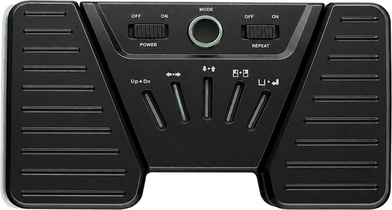

Hoş geldiniz 👋
Sahneye hazır
Sahnedeki En Büyük Yardımcın
- Eseri seç / kaydet
- Repertuvarı oluştur
- Sürükle bırak ile sırala
- Sayfa çevirme pedalıyla uyumlu
Repertuvar güncellendi
Anadolu’dan Türküler
☰Drama KöprüsüHüseyni · La
2Mendilimin YeşiliSaba · La
3Ankara’nın BağlarıEviç · Fa♯
4Çarşamba’yı Sel AldıHicaz · La
5Havada Turna Sesi VarEviç · Fa♯
6Atım Araptır BenimMahur · Sol
7Kırmızı Gülün Alı VarHicaz · La
8Yayla YollarıGülizar · La
9FidaydaFerahnüma · Re

—
—
—
Sen performansına odaklan... Gerisini repertuvar.app halletsin!..
✓
Offline çalışır
İnternet bağlantınız kopsa bile çalışmaya devam eder.
✓
Pedalla uyumlu
Bluetooth sayfa çevirme pedalları (harici cihaz) doğrudan çalışır. Pedalın yoksa dokunma, kaydırma ve klavyeyle de geçebilirsin.
✓
Grup senkronizasyonu
Tüm değişiklikler grup üyelerinizle anında senkronize olur.
✓
PDF & Nota
PDF, akor, not ve sözleri tek yerden görüntüleyin.
Neler Yapabilirsiniz?
Online & Offline
Sahne arkasında veya bulunduğunuz yerde sinyal mi yok? Fark etmez, Repertuvar Listelerinize ve Eserler'e yine de ulaşabilirsiniz. Sistem çevrimdışı da çalışmaya devam eder!Detay →
Eser Arşivi
Makam, usul, söz, akor — hepsini bir kez gir, her yerden ulaş. Türk müziğinin tüm incelikleriyle kayıt altına alın. Sistemde şu an — eser kayıtlı. Bu sayıya eser önererek katkıda bulunabilirsiniz. Önerilen eserler Admin ya da Editörler tarafından onaylandıktan sonra sistemde görünecektir...Detay →
Hazır Repertuvar Listeleri
Her ortam için veya sahne için ayrı listeler... — Dost meclislerinde prova yaparken veya konserlerde sürükle-bırak ile sıralamayı anında değiştir. Repertuvar listeleriniz her an hazır olsun! Yaptığınız değişiklikler gerçek zamanlı sisteme kaydedilir ve varsa tüm grup üyeleri değişiklikleri görür.Detay →
Size Özel / Herkese açık
Kişisel notalarınızı, henüz paylaşmak istemediğiniz bestelerinizi dilerseniz genelle paylaşır, dilerseniz size özel olacak şekilde gizli yaparsınız. Kontrol tamamen sizde!.. Bu tercihleri daha sonradan da değiştirmeniz mümkündür. O eseri bularak Düzenle butonu ile bunu gerçekleştirebilirsiniz.Detay →
Grup & Koro
Ekibinizle ortak Repertuvar listelerini paylaşın. Sahnede; "sırada ne var, hangi makamdan çalıyoruz, hangi usulden?" gibi soruları unutun!.. — Her şey anında herkesin kendi ekranında!..Detay →
Sayfa Çevirme Pedalıyla Uyumlu
Enstrüman elinizde, gözleriniz notalarda — siz sadece performansınıza odaklanın. Piyasadaki Bluetooth sayfa çevirme pedalları (AirTurn, Donner, iRig BlueTurn, PageFlip vb.) klavye tuşu gönderdiği için Repertuvar'la doğrudan çalışır; uygulama içinde ayar yapmanız gerekmez. Pedal harici bir cihazdır, ayrıca satın alınır. Pedalınız yoksa ekrana dokunarak, kaydırarak veya klavyeyle de eser geçebilirsiniz.Detay →
Son Eklenen EserlerTümü
1
Yükleniyor…